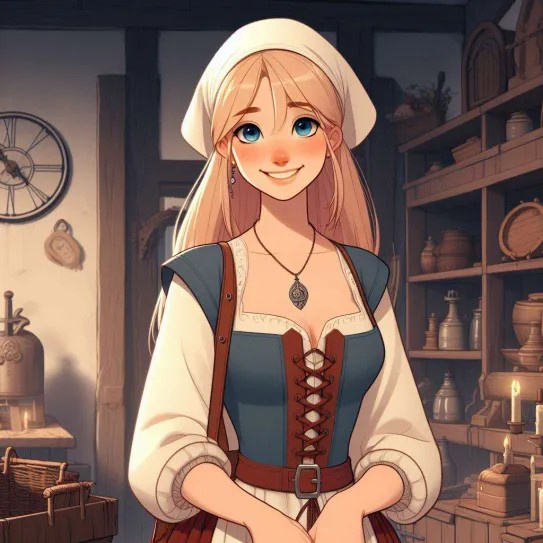
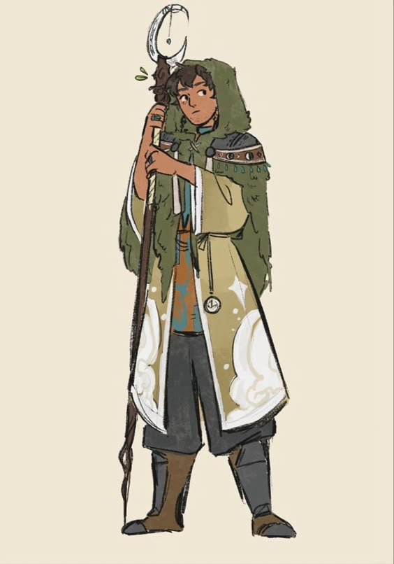

Персонажи
Хейке Вит

Внешность
Крестьянин из провинции Фризланд Священной Римской Империи. Среднего роста, с пронзительными серыми глазами и светлыми волосами и бородой, которые скорее вызывают первую ассоциацию с всклокоченной шкурой пастушьей собаки, чем с нормальными человеческими волосами. Возможно, все из-за того, что он слишком много времени проводит в конюшне и на выпасе?Характер
Немногословен и скорее нелюдим. Предпочитает общение с животными и старается не бывать на общих праздниках и ярмарках, разве когда сопровождает дочку ГесуИстория
Сын конюха Ульферта, Хейке не имел другого пути в цеховой Европе средних веков кроме как последовать по пути отца. Но это скорее было ему на руку - он плохо ладил со сверстниками и односельчанами, зато хорошо - с животными, и все в Маккуме знали, что если доверить свою корову или лошадь Молчуну Хейке, как называли его в народе, то вдруг оно и перестанет хромать, и удои улучшатся, да и в целом скотинка будет как будто полностью довольной жизнью, так что без работы Молчун не оставался, и на пропитание семье мог всегда заработать. Говорили, что не зря он так неохотно ходит в церковь, якобы видели у него какие-то деревянные фигурки. Только вот в колдовстве его подозревать, вроде, было не за что, потому дальше болтовни дело не заходило.Только вот когда умерла во время родов его жена, Мейя, еще больше замкнулся в себе и совсем перестал ходить на праздники да ярмарки. Разве что когда начала подрастать дочка Геса, которая не ведая того оборвала жизнь матери, стали видеть его односельчане в виде безмолвного сопровождающего. Странный был мужик, в общем, но никому жить не мешал, и цеховые правила выполнял, хоть и не жаловали его соседи
Навыки
СИЛ ЛОВ ТЕЛ ИНТ МДР ХАР
9/+0 12/+0 16/+2 13/+1 17/+2 8/-1
Нейтральное: Ликвидируйте угрозу, чья сущность противна природе.
Урон: к6
Максимальные ОЗ = 6 + Телосложение = 22
Текущие ОЗ = 22
Броня: 0
Нагрузка: 6 + СИЛ = 6
Уровень: 3
Мировоззрение: нейтральное
Метка:
Духи отметили Хейке светлыми волосами и бородой, и при любом обличье он всегда будет иметь светлые волосы/шерсть/перья на голове, где его прическа и светлый участок подо ртом/пастью/клювом, как будто и в животном обличье у него растет борода
Узы:
- Я думаю, что Генрих не привык сдаваться, поэтому я буду держаться рядом в минуту опасности
- Генрих узнал мой секрет и не попытался меня убить, поэтому я отплачу ему добром как смогу.
Дитя земли: шепчущие равнины
Природа питает : Вам не нужно есть или пить. Если ход гласит «используйте паёк», не обращайте на это внимание.
Показать содержимое
Постижение сущности: Когда вы проводите какое-то время за изучением духа животного, вы можете добавить его вид к числу тех, в кого вы можете превращаться.
Расовая особенность: Именно люди приручили животных, создав прочную связь с их родом. Вы можете превратиться (помимо прочего) в любое домашнее животное.
Язык Духов : Хрюканье, лай, чириканье и любые другие голоса диких животных для вас понятны так же, как человеческая речь. Вы можете понимать любое животное, что обитает на ваших землях, или чью сущность вы постигли.
Превращение : Когда вы взываете к духам, чтобы изменить с их помощью свой облик, бросьте+МДР. ✴ На 10+ вы получаете запас 3. ✴ На 7-9 — запас 2. ✴ При провале вы получаете последствия, который назовёт ведущий, и, несмотря ни на что, запас 1. Вы можете превратиться в любое животное, которое водится в ваших землях или сущность которого вы постигли: вы, со всеми вашими вещами, принимаете облик представителя этого вида. Вы перенимаете все сильные и слабые стороны этого животного: когти, крылья, жабры, способность дышать под водой (и неспособность дышать воздухом). Ваши характеристики остаются, хотя условия для некоторых ходов будет сложнее создать: домашней кошке с огром не тягаться. Ведущий также назовёт один или несколько ходов, доступных вашему новому обличью. Потратьте один запас, чтобы сделать такой ход. Когда запас заканчивается, вы возвращаетесь в свою обычное обличье. Вы также можете сделать это в любой момент, потратив весь оставшийся запас.
Божественная защита: (ход класса жреца по разрешению мастера в связи с особой религией персонажа) Если вы не используете щит или доспехи, то получаете броню 2.
Голоса неживого: Вашему взору доступны духи песка, камней и морских волн. Вы можете применять превращение, язык духов и постижение сущности к неодушевлённым природным предметам (камням, растениям и существам, сделанным из них). Обличия того, кто слышит голоса неживого, могут быть точными копиями вещей, в которые он превращается, или в них могут угадываться очертания фигуры друида.
Ходы животных:
Стайные охотники
• Призвать стаю
• Повалить их на землю
Летающие создания
• Сбежать в небо
• Поднять врага в воздух
Мощные звери
• Затоптать их
• Прорваться
Ядовитые
• Отравить
• Отпугнуть
Инвентарь
Настроен на предметы: -
Настроен на животных:
Домашние животные
Дикие животные с полей (лиса, заяц, косуля, грызуны, ящерицы, уж, гадюка)
Чайка
Нагрузка: 6 + СИЛ = 6
Снаряжение:
- Кинжал всадника (вес 1)
- деревянная резная фигурка - идол Фрейи
Настроен на животных:
Домашние животные
Дикие животные с полей (лиса, заяц, косуля, грызуны, ящерицы, уж, гадюка)
Чайка
Нагрузка: 6 + СИЛ = 6
Снаряжение:
- Кинжал всадника (вес 1)
- деревянная резная фигурка - идол Фрейи
Генрих Мильнер

Внешность
Невысокий крепыш с седыми волосами. Из-за седых волос, шрамов и морщин выглядит старше своего возраста.Загрубевшая кожа, и шрамы
История
Сложно рассчитывать на наследство, если ты пятый сын... Когда отец распределил семейное имущество старшему досталась мельница, второму - осел, третьему - хорошие кожаные сапоги, а четвертому - кот. Юному Генриху - ничего, если не считать родительского благословения идти на все четыре стороны. Ну а куда бедному крестьянину податься? В армию. Там хотя бы кормят, одежду дают и какое-никакое жалование платят. А если повезет, то и отставки дожить можно.Генриху повезло. Он дожил. На сбережения и выплаченную при отставке премию купил себе мельницу в небольшой деревушке на берегу моря неподалеку от Бремена и зажил потихоньку обычной жизнью.
Навыки
СИЛ 16 (+2)
ЛОВ 13 (+1) - за уровень
ВЫН 16 (+2) - за уровень
ИНТ 10 (+0)
МУД 13 (+1)
ХАР 8 (-1)
Урон - к10+к4
Броня - 4=2+1+1
ОЗ 26=10+16
Мировоззрение: доброе. Защитите того, кто слабее вас.
Уровень: 3
Привычный к доспехам
Договариваясь с собутыльником, можете использовать ТЕЛ, а не ХАР
Знаковое оружие: топор (взмах меча). Огромное (мощное, месиво) Идеально сбалансированное (точное). Закаленное в крови
Сложные ходы:
- Безжалостный (1к4 доп урона)
- Железная шкура (+1 к броне)
Узы:
- Бёрны в свое время мне помогли, поэтому я должен приглядеть за их сыном
- Хейке может пострадать из-за своего таланта. Надо его защитить
- Сит хороший парень, а Фарли ждет плохой конец. Я должен помочь ему сделать правильный выбор.
- Голос Ингрид напоминает голос одной моей давней знакомой. Я должен ее увидеть
- Ингрид похожа на одну мою давнюю знакомую. Я должен узнать, кто ее мать
- Хейке хороший мужик, но плохо дерется. Надо его кое-чему научить
ЛОВ 13 (+1) - за уровень
ВЫН 16 (+2) - за уровень
ИНТ 10 (+0)
МУД 13 (+1)
ХАР 8 (-1)
Урон - к10+к4
Броня - 4=2+1+1
ОЗ 26=10+16
Мировоззрение: доброе. Защитите того, кто слабее вас.
Уровень: 3
Привычный к доспехам
Договариваясь с собутыльником, можете использовать ТЕЛ, а не ХАР
Знаковое оружие: топор (взмах меча). Огромное (мощное, месиво) Идеально сбалансированное (точное). Закаленное в крови
Сложные ходы:
- Безжалостный (1к4 доп урона)
- Железная шкура (+1 к броне)
Узы:
- Бёрны в свое время мне помогли, поэтому я должен приглядеть за их сыном
- Хейке может пострадать из-за своего таланта. Надо его защитить
- Сит хороший парень, а Фарли ждет плохой конец. Я должен помочь ему сделать правильный выбор.
Инвентарь
Топор - 2
Пластинчатая броня - 3
Щит - 2
Нагрузка: 7/14
Деньги: 22 зм
Пластинчатая броня - 3
Щит - 2
Нагрузка: 7/14
Деньги: 22 зм
Ингрид Линд

Внешность
Показать содержимое
Белобрысая девочка 17 лет от роду.
Характер
Наивна и любознательнаИстория
Рождённая в прибрежной деревушке близ Гамбурга, Ингрид воспитывалась матерью и не знала своего отца. Мать её, Ханна, была знахаркой и помогала крестьянам чем могла: лечила людей от недугов, а скот от хвори. Конечно, и с другими вопросами к ней обращались: и порчу отвести, и приворожить кого, и у духов чего спросить, и на удачу поколдовать - всё могла Ханна. Но дочери строго настрого о том говорить запрещала. Ибо если узнают о том, кому не следует, быть беде. Долгое время Ингрид не понимала эти запреты. Но тайны матери хранила. А потом из разговоров со сверстниками осторожно узнала, что магией это всё зовётся. А кто ею пользуется - то ведьмы и сжигаются на кострах. Ибо от лукавого это всё.В церковь Ханна ходила, хоть и без рвения, никогда не увлекаясь религиозностью и относясь к ней, как к данности. И такое отношение передалось и дочери.
Мать не учила Ингрид заговорам, хоть нередко девочка помогала ей в ритуалах, собирая необходимые травы или расставляя в нужной последовательности компоненты. Ингрид любила наблюдать, как Ханна ворожит, призывая духов или отводя проклятья.
Тем не менее знахарка обучила дочь травничеству, а также буквам и счёту. И вот тогда любознательная девочка добралась до записей матери. На тот момент она уже хорошо знала, что таким, как они, нет места в этом мире. Но тайны магии влекли Ингрид, и она нередко утаскивала исписанные листки и с упоением читала о духах и ритуалах.
Навыки
СИЛ ЛОВ ТЕЛ ИНТ МДР ХАР
8/-1 16/+2 9/+0 17/+2 12/+0 13/+1
Уровень: 3
Урон: к4
Максимальные ОЗ : 4 + Телосложение = 13
Броня: 0
Нагрузка: 7 + СИЛ = 6
Мировоззрение: доброе (используйте магию для непосредственной помощи другому)
Раса: аля эльф - Волшебство у вас в крови. Считайте обнаружить магию фокусом.
Буклет: ссылка
Узы:
- Вильгельм нравится Ингрид, но в последнее время он слишком занят общими делами. Ингрид хочет быть полезной, чтобы он обратил на неё внимание.
- Ингрид симпатичен Эйвон, и она поможет ему, если потребуется помощь.
- Хейке не понимает. Я докажу ему, что места силы несут не опасность, но возможности.
Стартовые ходы:
- Книга заклинаний
- Подготовка заклинаний
- Чтение заклинаний
- Защита от заклинаний
- Ритуал
Сложные ходы:
- Волшебный оберег
Показать содержимое
Пока у вас есть хотя бы одно подготовленное заклинание первого уровня или выше, вы получаете +2 к броне.
- Расширенная книга заклинаний: исцелить лёгкие раны
Показать содержимое
Добавьте в книгу новое заклинание из списка любого класса.
Фокусы:
- Свет
Показать содержимое
Предмет, которого вы коснулись, начинает излучать волшебный свет, по яркости равный свету факела. От пламени не исходит тепла, оно «горит» беззвучно и не расходует топливо, однако в остальном всё в точности как у обычного факела. Цвет свечения может быть любым на ваш выбор. Заклинание действует, пока вы рядом с предметом.
- Незримый слуга
Показать содержимое
Вы создаёте невидимый волшебный механизм, который не умеет ничего, кроме как переносить предметы. Его нагрузка равна 3, и он несёт всё, что вы ему дали. Он не может поднимать предметы сам, может только переносить то, что вы ему дали. Предметы, которые несёт незримый слуга, со стороны выглядят как плывущие по воздуху в нескольких шагах от вас. Если незримый слуга получает хоть сколько-нибудь урона или оказывается слишком далеко от вас, то он немедленно исчезает, роняя все предметы, которые несёт. Иначе незримый слуга существует до тех пор, пока вы не прекратите поддерживать заклинание.
- Представление
Показать содержимое
Вы показываете небольшие фокусы, жалкое подобие заклинаний. Если при чтении вы касаетесь предмета, вы можете слегка изменить его вид: сделать чистым или грязным, охладить или нагреть, изменить вкус, запах или цвет. Если вы читаете заклинание, не касаясь предмета, то можете создавать небольшие иллюзии — не больше себя самого. Эти иллюзии довольно топорные и никого не одурачат, только развлекут.
- Обнаружить магию
Показать содержимое
Одно из ваших чувств на короткое время получает возможность ощущать магию. Ведущий скажет, что волшебного находится неподалёку.
Заклинания 1 уровня:
- Разговор с духами
Показать содержимое
Назовите духа, с которым хотите поговорить (или оставьте это на долю ведущего). Вы призываете его с родного плана, достаточно близко к вам, чтобы поговорить. Дух обязан ответить на один вопрос, который вы зададите, в меру своих способностей.
- Невидимость
Показать содержимое
Коснитесь союзника, и он станет невидимкой для всех. Заклинание действует, пока вы его не развеете или пока цель не атакует кого-то. До этого момента вы не можете творить заклинания вообще.
- Тревога
Показать содержимое
Читая заклинание, обойдите по периметру участок земли. Когда любое существо войдёт внутрь очерченного круга, заклинание даст вам об этом знать; даже если вы спите, оно вас разбудит. Тревога будут действовать, пока вы вновь не возьмётесь подготавливать заклинания.
- Волшебная стрела
Показать содержимое
С ваших пальцев срываются заряды чистой энергии волшебства. Вы наносите 2к4 урона одной цели.
- Исцелить лёгкие раны
Показать содержимое
Ваше прикосновение заставляет раны подсохнуть и облегчает боль в сломанных костях. Вы исцеляете 1к8 урона союзнику, которого коснулись.
Заклинания 2 уровня:
- Развеять магию
Показать содержимое
Это заклинание атакует другое, действующее рядом с вами заклинание или
волшебный эффект из иного источника. Слабые заклинания заканчивают-
ся, сильная магия слабеет или прекращается, пока вы рядом.
волшебный эффект из иного источника. Слабые заклинания заканчивают-
ся, сильная магия слабеет или прекращается, пока вы рядом.
Инвентарь
Жбытек из Вышепрджела (ака Вильгельм)

Характер
Хаотично-куртуазныйИстория
Конечно, часто говорят, что живя в Империи, лучше быть поближе к морю да подальше от столицы, но и в столице свои преимущества тоже есть. Стараниями Карла Великого Прага обрела не только столичный статус, но и величественный мост и не менее величественный университет. Знал бы Карл, к чему приведет и то и другое буквально спустя полвека после постройки!Высокий Карлов Мост стал идеальным местом для сбрасывания в реку политических и не очень политических противников. Следующие прямо за ним влтавские пороги обычно не оставляли жертве шансов, и колеса водяных мельниц в Чертовке не раз приходилось чистить от застрявших кусков политических интриг.
Таковая практика развилась сразу же после открытия моста, но пражане - люди хваткие, к новому привыкают быстро, и уже через пятнадцать лет славная традиция выбрасывать ненужный хлам в реку дошла до Градчан, где и был лета 1419го выброшен из окна весь городской совет, а с ними и судья с бургомистром. Метафорически выражаясь, из того же окна в ту же сраку вылетела и мирная жизнь по всей Чехии.
Немного ранее описываемых событий выпало некому Жбытеку, самовольно покинувшему отцовский дом в Вышепрджеле с немалой (но давно истраченной) суммой, поступить-таки в Карлов Университет, дабы изучать богословие и историю. Науки эти были настолько благородны, что даже не имевшему ни капли дворянской крови Жбытеку пришлось срочно придумать себе фамилию, а также приобрести шпагу и перевязь. Последнее сделал он, разумеется, в кредит, поскольку вместе с фамилией полагалось ему еще и слово дворянина, да и не пристало человеку благородному марать руки деньгами По крайней мере, так делали на старших курсах, и Жбытек свято чтил университетские традиции. Что до шпаги, то это был в жизни Жбытека столь же необходимый инструмент, как и перо, ведь известно, что пером истину записывают, но рождается-то она в спорах! Именуемых благородно "научными диспутами". Жбытек, как человек увлекающийся и жадный до знаний, диспутировать любил. Вскоре его имя стало достаточно известным в Праге, и он получил некоторый вес в академической среде. По крайней мере, к его слову стали прислушиваться, и теперь уже никто не решался опровергнуть его тезисы авторитетом. Да и с более тонкими способами опровержения оппоненты стали осторожнее, но здесь Жбытек был достаточно уверен в себе - ведь он не чепуху молол, в конце концов, а излагал силлогизмы. Против такого не попрешь, это ещё греки поняли! Правда, потом римляне изобрели легионы, но это к делу мало относится.
Будучи человеком честным, Жбытек довольно быстро попал под влияние Чашников, последователей Яна Гуса. Жажда справедливости клокотала в его груди, и он не раз вызывался читать проповеди прямо посреди улицы к особо радостным событиям, вроде разрешения причастия плотью и кровью Спасителя в очередной церкви. Увы, данная практика мешала учёбе. Не все преподаватели были готовы принять очевидные истины, написанные в Евангелии, ссылаясь притом на многолетнюю практику обучения. Иными словами, им было проще учить "как принято", чем признать Святую Истину. В конечном счёте Жбытек вызвал своего куратора на научный диспут, вне стен университета, неподалеку от Вышеградской скалы. Там же диспут был Жбытеком с блеском выигран, но на следующий день товарищи подсказали ему, что тела во Влтаве находят спустя сутки, и ему лучше бы взять академический отпуск на пару лет, пока все не уляжется. Было то осенью лета 1418го, а уже через год всё настолько улеглось, что Жбытек решил за наиболее благое дело покинуть родной край, и отправиться завершать обучение в другие страны, будь то Париж или даже Оксфорд, о котором он, конечно, слышал, но представлял его очень туманно.
Навыки
СИЛ ЛОВ ТЕЛ ИНТ МДР ХАР
12/+1 16/+2 10/+0 13/+1 8/-1 16/+2
Уровень : 3
Урон : 1d6
Максимальные ОЗ : 6 + (ТЕЛ) = 16
Броня : 0
Нагрузка : 9 + СИЛ = 10
Мировоззрение : хаотичное
Показать содержимое
Подтолкните других к спонтанному принятию важных решений.
Раса : эльф
Показать содержимое
Оказавшись в важном, по вашему мнению, месте, можете спросить у ведущего один факт из истории этого места
Языки : Немецкий (от страны), чешский (от бати), латынь, греческий (оба от университета), французский (шел в комплекте с герпесом)
^Уровень 2: М/к жреца: Знак Свыше
Ловкость 15->16
^Уровень 3: ход??
Телосложение 9->10
Ходы:
Знание барда : • боги и те, кто им служит.
Показать содержимое
Когда вы впервые сталкиваетесь с важным существом, предметом или местом (как сами решите), вы — если это связано со сферой ваших знаний барда — можете задать ведущему один вопрос об этом. Ведущий ответит честно. Он может спросить, из какой сказки, песни или легенды вам известна эта информация.
Знак свыше (жрец) : Поступая в соответствии с догматами веры, вы можете получить озарение или руководящее указание от своего божества.
Магия искусства
Показать содержимое
Вплетая своё выступление в заклинание барда, выберите союзника и эффект:
цель излечивает 1к8 урона;
цель получает +1к4 к следующему броску урона;
разум цели очищается от одного из зачарований;
следующая успешная попытка помочь цели даст ей бонус +2, не +1.
Потом бросьте+ХАР.
🔸 10+ на союзника накладывается выбранный эффект.
🔸 7-9 ваше заклинание работает, однако, по выбору ведущего, вы либо привлекли нежелательное внимание, либо ваше колдовство отразилось на другие цели, подействовав и на них тоже.
цель излечивает 1к8 урона;
цель получает +1к4 к следующему броску урона;
разум цели очищается от одного из зачарований;
следующая успешная попытка помочь цели даст ей бонус +2, не +1.
Потом бросьте+ХАР.
🔸 10+ на союзника накладывается выбранный эффект.
🔸 7-9 ваше заклинание работает, однако, по выбору ведущего, вы либо привлекли нежелательное внимание, либо ваше колдовство отразилось на другие цели, подействовав и на них тоже.
Обаятельный и искренний
Показать содержимое
Когда вы разговариваете с кем-то откровенно, вы можете задать НПС, один вопрос из списка ниже. Игрок должен дать честный ответ, а потом, в свою очередь задать вопрос из списка (на который вы также должны ответить честно).
- Кому ты служишь?
- Что бы ты хотел, чтобы я сделал?
- Как я могу убедить тебя сделать ________?
- Скажи честно, что ты чувствуешь в данный момент?
- Каково твоё самое сокровенное желание?
- Кому ты служишь?
- Что бы ты хотел, чтобы я сделал?
- Как я могу убедить тебя сделать ________?
- Скажи честно, что ты чувствуешь в данный момент?
- Каково твоё самое сокровенное желание?
Тихая гавань
Показать содержимое
Когда вы возвращаетесь в поселение, где уже бывали раньше, скажите ведущему, когда это произошло. Он расскажет вам, что изменилось здесь за прошедшее время.
Неземная музыка
Показать содержимое
Магия искусства в вашем исполнении впечатляет —можете выбрать два
эффекта, а не один.
эффекта, а не один.
Узы :
Ингрид +1
Показать содержимое
Генрих +1
Показать содержимое
Я вижу, что Генрих предлагает здравые идеи, но иногда ему недостает таланта в убеждении других людей, не столь прозорливых, как он сам. Своим примером я собираюсь научить его ораторскому искусству.
Инвентарь
Сит Йорн (Фарли Крыса)

Внешность
Располагающая внешность, голубые глаза, светлые волосы. Выглядит младше своего возраста из-за субтильного телосложения. Носит плащ с капюшоном, скрывающий кожаный доспех и перевязь с метательными кинжаламиХарактер
Суровые жизненные обстоятельства научили Фарли приспосабливаться и подстраиваться под собеседника. Сам Фарли скрытен и осторожен и лишь вдали от посторонних глаз и наедине с самим собой он может помечтать о далёких землях и чудесных приключениях.История
Родился в семье мельника, но не вышел ни силой, ни телосложением, а его природную ловкость было сложно пристроить к семейному делу. Старшие братья издевались над Фарли, а отец откровенно стыдился его. Единственным его другом и учителем был местный священник, который научил Фарли читать и писать, хотя наука давалась ему с трудом. Когда Фарли подрос, его отдали в ученики к слесарю, которому требовался ловкий помощник для работы с мелкими деталями часов и замков. Там Фарли наконец почувствовал себя нужным и полезным. Однако назвать счастливым этот период жизни Фарли тоже нельзя - мастер сильно пил, оттого Фарли приходилось работать все больше, и получать больше тумаков от мастера, когда заказчики высказывали недовольство ухудшившимся качеством изделий. Однажды в один из вечеров Фарли не выдержал побоев и зарезал мастера и пустился в бега, забрав все ценное, что смог найти. Фарли подался в крупнейший город графства и там примкнул к банде Лота Кабана. После одного дела банду Лота обложили стражники и лишь Фарли смог выбраться незамеченным, а всех его подельников перебили. Из-за этого среди воров стал распространяться слух, что Фарли слил информацию, поэтому ему опять пришлось бежать.Навыки
СИЛ 9 (0)
ЛОВ 17 (+2)
ТЕЛ 12 (0),
ИНТ 9 (0)
МУД 13 (+1)
ХАР 15 (+1)
Урон - к8
Броня - 1
ОЗ - 6+12=18
Нагрузка - 9
Мировоззрение: нейтральное
Действуйте скрытно, проникая в нужные вам места незаметно
Расовый бонус.
Когда копаюсь в памяти в памяти или изучаю обстановку в ситуации, связанной с преступлением я получаю +1 к броску
Гибкая мораль
Когда кто-то пытается определить ваше мировоззрение, можете назвать любое.
Специалист по ловушкам
Показать содержимое
Удар в спину
Показать содержимое
Отравитель
Показать содержимое
Известные яды:
Показать содержимое
Первый выстрел
Вас не застать врасплох. Даже когда враг нападает неожиданно, вы действуете первым.
Подлый удар
Если вы используете оружие с дальностью рука или свойством точное, ваш удар в спину получает бонус 1к6 к урону.
Бонус "Пей как сатир": +1 на спас по Телосложению против алкоголя и пищевых отравлений. До конца ноября
ЛОВ 17 (+2)
ТЕЛ 12 (0),
ИНТ 9 (0)
МУД 13 (+1)
ХАР 15 (+1)
Урон - к8
Броня - 1
ОЗ - 6+12=18
Нагрузка - 9
Мировоззрение: нейтральное
Действуйте скрытно, проникая в нужные вам места незаметно
Расовый бонус.
Когда копаюсь в памяти в памяти или изучаю обстановку в ситуации, связанной с преступлением я получаю +1 к броску
Гибкая мораль
Когда кто-то пытается определить ваше мировоззрение, можете назвать любое.
Специалист по ловушкам
Показать содержимое
Когда вы внимательно исследуете опасное место, бросьте +ЛОВ.
Если 10+ - запас 3, если 7-9 — запас 1. Пока вы исследуете местность, вы можете потратить запас, чтобы
задать следующие вопросы:
• Есть ли здесь ловушка, и что заставит её сработать?
• Что сделает ловушка, если сработает?
• Что ещё интересного тут спрятано?
Если 10+ - запас 3, если 7-9 — запас 1. Пока вы исследуете местность, вы можете потратить запас, чтобы
задать следующие вопросы:
• Есть ли здесь ловушка, и что заставит её сработать?
• Что сделает ловушка, если сработает?
• Что ещё интересного тут спрятано?
Удар в спину
Показать содержимое
Когда вы атакуете в ближнем бою беззащитного или застигнутого врасплох врага, вы
можете выбрать: нанести урон, как обычно, или сделать бросок + ЛОВ. На 10+ выберите
два пункта из списка. На 7-9 — один.
• Противник не связывает вас ближним боем.
• Вы наносите дополнительные 1к6 урона.
• Вы получаете +1 к следующему ходу для себя или союзника.
• Вы уменьшите его броню на 1 до тех пор, пока он её не починит.
можете выбрать: нанести урон, как обычно, или сделать бросок + ЛОВ. На 10+ выберите
два пункта из списка. На 7-9 — один.
• Противник не связывает вас ближним боем.
• Вы наносите дополнительные 1к6 урона.
• Вы получаете +1 к следующему ходу для себя или союзника.
• Вы уменьшите его броню на 1 до тех пор, пока он её не починит.
Отравитель
Показать содержимое
Вы умеете хранить и применять яды. Выберите один яд из списка ниже: вы можете использовать его без вреда для себя, и получаете три его дозы на первом уровне. Также вы
можете сварить 3 дозы этого яда бесплатно при наличии времени на сбор материалов и
безопасного места для работы. Есть яды для приёма внутрь, их добавляют в еду или питьё
цели. Контактному яду нужно коснуться тела, например, с помощью клинка.
можете сварить 3 дозы этого яда бесплатно при наличии времени на сбор материалов и
безопасного места для работы. Есть яды для приёма внутрь, их добавляют в еду или питьё
цели. Контактному яду нужно коснуться тела, например, с помощью клинка.
Известные яды:
Показать содержимое
Яд скорпиона (контактный): смазав оружие ядом, вы делаете два броска урона и выбираете лучший
Первый выстрел
Вас не застать врасплох. Даже когда враг нападает неожиданно, вы действуете первым.
Подлый удар
Если вы используете оружие с дальностью рука или свойством точное, ваш удар в спину получает бонус 1к6 к урону.
Бонус "Пей как сатир": +1 на спас по Телосложению против алкоголя и пищевых отравлений. До конца ноября
Инвентарь
– Кожаный доспех
– Кинжал
– Короткий меч из пещеры (сломан)
– Тяжелая сабля (подобрана у турка, отдана Тихо)
– Легкая сабля, точное (куплена у греков)
Кнут турка
– 3 метательных ножа
– Запас пайков (5 шт)
– Снаряжение авантюриста
–Сокровища, набранные в пещере
–Кольцо с крупным бриллиантом 80 м
– Сумка
– Недвижимый прут (вес 0)
Показать содержимое
---------------------------------------------------------------
Узы
Генрих опытный воин, я многому могу у него научиться
Вильгельм лидер группы и я хочу заслужить его уважение
Эйвон спас меня, и теперь у меня перед ним должок
Эйвон ведет себя подозрительно, я хочу узнать его тайну
----------------------------------------------------------------
– Кинжал
– Легкая сабля, точное (куплена у греков)
– 3 метательных ножа
– Запас пайков (5 шт)
– Снаряжение авантюриста
–
–
– Сумка
– Недвижимый прут (вес 0)
Показать содержимое
Забавный металлический прут с кнопкой. Нажмите на кнопку, и прут просто останется на месте. Он застынет — в воздухе, стоя или лёжа. Его не сдвинуть: можете толкать его, тянуть, делать всё, что угодно, — прут останется на месте. Возможно, он уничтожим. Или нет. Нажмите кнопку снова, и прут свободен — можете забрать его с собой. Иметь при себе такую упрямую вещь может быть полезно.
---------------------------------------------------------------
Узы
Вильгельм лидер группы и я хочу заслужить его уважение
Эйвон ведет себя подозрительно, я хочу узнать его тайну
----------------------------------------------------------------
Эйвон Бёрн

Внешность
Показать содержимое
Парень лет 20 среднего роста, с каштановыми волосами и темными глазами.
Носит старую кожанную куртка, которую ему подарил отец (говорят она из кожи быка который был размером с сарай). А еще удобный ухватистый посох, с которым Эйвон ходит за покупками в соседние деревни, и хотя молодому парню этот посох не особо нужен, но он очень здоровской формы, а какой мальчишка откажется притащить домой палку странной формы?
Характер
Парень громко смеется, легок в общении и, кажется, знает всех жителей Бремена и его окрестностей. Чему впрочем никто не удивляется - "Василиск" уютная таверна в которую все непрочь заглянуть. Немножко неуклюжий, и годы работы с напитками этого ничуть не поправили, а гости давно привыкли и не упускают случая пошутить и посмеятся с Эйвеном.Узы
- Эйвон узнал, что Вильгельм протестанец. Теперь Эйвон хочет поддержать Вильгельма в безопасном раскрытии его тайны, т.к. тот знает тайну Эйвона.
- Эйвон доверяет Ингрид и выручит её, если она попадёт в беду.
- Хейке что-то знает о магии. Похоже, он даже что-то провернул в пещере. Было бы неплохо научиться у него чему-нибудь.
История
Отец и мать Эйвона - чета Бëрнов они владеют небольшой таверной под названием "Одноглазый василиск", что в небольшом городке Бремен.Для слабого парня, в детстве не было большего увлечения, чем сидеть вместе с отцом у камина и вслух обсуждать, записывая, сколько товара ушло, и сколько потратиться в следующем месяце, и что нужно будет купить у торговца Джона, а зачем сходить в соседнюю деревню к мельнику Генриху. Хотя и обычных детских забав Эйвон не чурался.
Сейчас, когда парень подрос, а родители немного состарились, всё хозяйство потихоньку ложилось на его плечи, но приученному с детства к грамоте и счету Эйвон это было не в тягость, а скорее в удовольствие, так же как и болтать с односельчанами о том, о сем наливая вечернюю кружку подогретого со специями эля.
У Эйвена есть оккультный гримуар, на латыни, с заметками и расшифровками неизвестного, который парню продал торговец решивший не сжигать найденный гримуар из жажды наживы.
Местный священник принял Эйвена в ученики после просбы Бёрна, якобы ради просвещения в истинной вере и чтения священных текстов, но на самом деле чтобы учить латынь для расшифровки гримуара(он видел в священном писании те же буквы что и в гримуаре). В прочем и размышлять на теологией и говорить о ней Эвену тоже было интересно, но не интереснее чем заниматься магией.
Но на самом деле Эйвон конечно не тёмный культист, а просто боиться что его никто не поймёт и вообще на костре сожгут.
А по мнению Эйвена магия может привести всем людям много радости и пользы.
А еще Эйвен нашел в одной из священных книг описание ритуала (Исцелить легкие раны), который по структуре был похож на заклинания описанные в гримуаре, и хотя пока ни разу его не пробовал, но уже переписал по памяти на свободные страницы в гримуаре. Все как положенно, на латыни, хоть наверное и с ошибками.
Навыки
СИЛ(13/+1) ЛОВ(8/-1) ТЕЛ(12/+0) ИНТ(18/+3) МДР(9/+0) ХАР(15/+1)
Уровень: 3
Доброе: Используйте магию для непосредственной помощи другому.
Человек: Вы можете творить одно жреческое заклинание как заклинание мага( Исцелить лёгкие раны )
Урон: d4
HP: 16
Броня: 1
Языки: местный диалект, базовое знание латыни
Сложные ходы:
- Знаток чар
Показать содержимое
Если у вас есть возможность провести определенное время за изучением волшебного предмета в безопасной обстановке, вы можете спросить ведущего, как этот предмет действует. Ведущий ответит вам честно.
- Талант: Двойник
Показать содержимое
Выберите заклинание. Подготавливая его, считайте, что уровень этого
заклинания ниже на 1.
заклинания ниже на 1.
Заклинания
Фокусы:
-
Свет
Показать содержимоеПредмет, которого вы коснулись, начинает излучать волшебный свет, по
яркости равный свету факела. От пламени не исходит тепла, оно «горит»
беззвучно и не расходует топливо, однако в остальном всё в точности как у
обычного факела. Цвет свечения может быть любым на ваш выбор. Заклинание действует, пока вы рядом с предметом. -
Незримый слуга
Показать содержимоеВы создаёте невидимый волшебный механизм, который не умеет ничего,
кроме как переносить предметы. Его нагрузка равна 3, и он несёт всё, что
вы ему дали. Он не может поднимать предметы сам, может только переносить то, что вы ему дали. Предметы, которые несёт незримый слуга, со
стороны выглядят как плывущие по воздуху в нескольких шагах от вас.
Если незримый слуга получает хоть сколько-нибудь урона или оказывается
слишком далеко от вас, то он немедленно исчезает, роняя все предметы,
которые несёт. Иначе незримый слуга существует до тех пор, пока вы не
прекратите поддерживать заклинание. -
Представление
Показать содержимоеВы показываете небольшие фокусы, жалкое подобие заклинаний. Если при
чтении вы касаетесь предмета, вы можете слегка изменить его вид: сделать
чистым или грязным, охладить или нагреть, изменить вкус, запах или цвет.
Если вы читаете заклинание, не касаясь предмета, то можете создавать небольшие иллюзии — не больше себя самого. Эти иллюзии довольно топорные и никого не одурачат, только развлекут.
-
Исцелить лёгкие раны
Показать содержимоеВаше прикосновение заставляет раны подсохнуть и облегчает боль в сломанных костях. Вы исцеляете 1к8 урона союзнику, которого коснулись. -
Волшебная стрела
Показать содержимоеС ваших пальцев срываются заряды чистой энергии волшебства. Вы наносите 2к4 урона одной цели. -
Невидимость
Показать содержимоеКоснитесь союзника, и он станет невидимкой для всех. Заклинание действует, пока вы его не развеете или пока цель не атакует кого-то. До этого
момента вы не можете творить заклинания вообще. -
Очаровать персону
Показать содержимоеЧеловек (в широком смысле этого слова, не зверь и не монстр), которого вы
коснулись, читая заклинание, считает вас лучшим другом, пока не получит
урон или вы своими действиями не убедите его в обратном. -
Телепатия
Показать содержимоеВы можете создать телепатическую связь с другим человеком, коснувшись его; это позволит вам разговорить с ним мысленно. В один момент времени вы можете поддерживать телепатическую связь только с одним человеком.
-
Двойник
Показать содержимоеЧитая это заклинание, коснитесь другого существа: вы принимаете его облик. Ваши физические характеристики копируюи его, но память и манера поведения остаются. Вы возвращаетесь в свой обычный облик, когда получаете урон или когда сами прекращаете поддерживать это заклинание. Пока это заклинание действует, вы не можете использовать классовые ходы мага.
Инвентарь
HP
: 16/16
Вдохновение : 1
Подготовленные заклинания:
- Телепатия
- Волшебная стрела
- Двойник
Имущество (5/8):
Вдохновение : 1
Подготовленные заклинания:
- Телепатия
- Волшебная стрела
- Двойник
Имущество (5/8):
- золото: 12 монет
- книга заклинаний (вес 1)
- кожаная броня (броня 1, вес 1)
- целительное зелье (вес 0) (вес 0)
пайки (5 использований, вес 1)- посох (взмах меча, двуручное, вес 1)
- "счастливая" сабля (вес 2)
- cтранные увеличивающие стекляшки
- папирус с летописью
- книга из пещеры